-
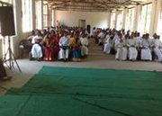
Clergy and wives retreat at Diocesan levelI. I. Introduction: Greetings in the mighty name of Lord and Savior Jesus Christ from the Diocese of Karimnagar. The year 2015-16 has been a progressive and blessed year in the life and witness of the Church. Diocese has achieved its goals and priorities to the fullest of its vigor with the help of MCB. The tremendous transformation has taken place in the micro level and macro level in the lives of the people, congregations, clergy and the Diocese. Here we would like to share the glimpses of enriching experience of transformation in the life of the Diocese for joining with us in pressing God for his wonderful works of salvation and transformation in manifold ways.
II. Clergy retreats and workshops: There were number of programs organized for equipping the clergy of the Diocese. Workshops and retreats were organized in the various groups of the Diocese and even at the Diocesan level. The Clergy retreats were held at Aler, Jagtial, Karimnagar, Parkal and Warangal. The main purpose of the workshops and retreats is to educate and update the Clergy with contextual challenges and approaches of the Pastoral administration and financial administration and create more sensitivity towards transparency and responsibility. These efforts were taken care of under the dynamic leadership of the Bishop and the Diocesan Officers. The Bishop advises and guides the congregation and Pastors for effective Pastoral Ministry in the respective Pastorates. Indeed there was a significant change in the attitude and work of the pastors in the Diocese.
-
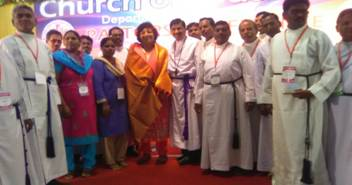
26 Pastors participated in the Pastors Conference - 70 CSI Formation Day in Chennai
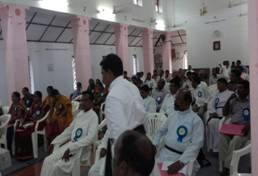
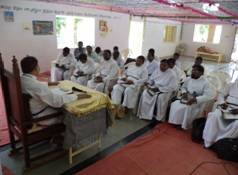
Group level clergy and wives retreat. Bishop is taking a session on how to relate with other faiths.
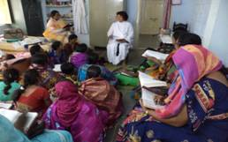
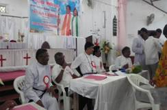
Priscilla is taking a Bible Study to pastor’s wives on “Role of Pastors wives in church and society.
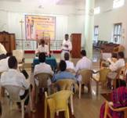
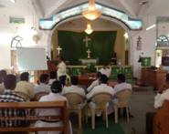
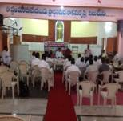
Group wise clergy were given lecture on financial matters especially how to maintain the accounts by
Mr. Anil, Charted Accountant.
-
Pastors Family Retreat:
In the history of Karimnagar Diocese Group Wise Pastors Family Retreat was conducted in various groups for the first time followed by games. We had Bible study and group discussions on “Role of Pastors Family”, games & prizes. This enabled the pastors to spend a valuable time with their family members. This retreat helped the pastor’s wives to build relationship with one another and share their experiences.
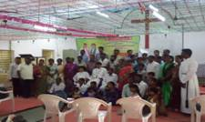
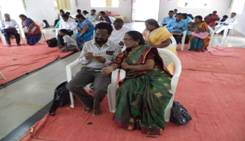
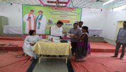
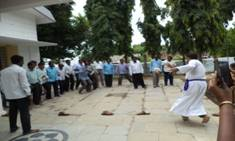
Construction of Parsonages:
With your magnanimous help we could take up the task of building new parsonages in rural villages.
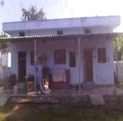
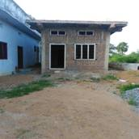
1. Parsonage built at Ramagundam which is completed and dedicated.
2. Parsonage at Salvia which is under construction.
3. Parsonage at Koripalli which is under construction.
We were also blessed through your support in repairing some of the old parsonages built during the missionaries’ times.
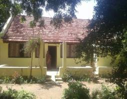
.
III. Interfaith Concerns: Since the Diocese situated in the multi-religious context having good relationships with people of other faiths. Many of our pastors have participated in the conferences on inter-religious dialogues organized by the Hindu and Muslim communities and also contributed to the debates and interviews. The other faith communities took part in Christmas and other celebrations and we also did participate in order to express solidarity and embrace friendliness and openness in accepting them and their faith experiences. Further, two pastors namely Rev.R.Prasad and Rev.D.Rebika Rani have been to Henry Martin Institute, Hyderabad, for intensive training in the concerns of interfaith issues and challenges. Their experiences are useful to continue Ministry in other faith communities.
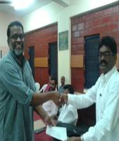
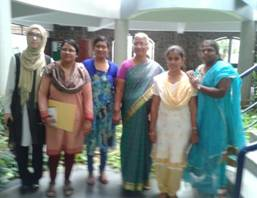
IV. Receiving and Re-Building Mission Activities: The Bishop, the Pastors and Evangelists of the Diocese are trying very hard to rebuild the congregations in the remote villages by organizing Suvartha Danda Yathralu, which is indeed a great mode of Evangelization taught by the Methodist missionaries.
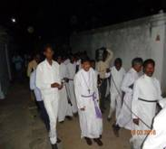
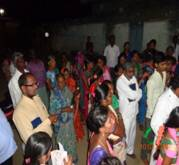
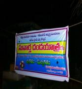
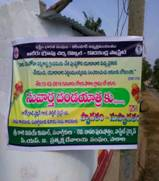
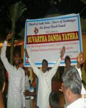
“Suvartha Danda Yathra” is an event where the pastors and members of congregation go around the village singing, dancing, preaching the gospel. As a result of which on 26 Feb 2016, nearly 94 were baptized, on 17 May 2016, more than 226 were baptized, and mass confirmations on 3 May 2016
Mass Baptisms
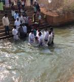
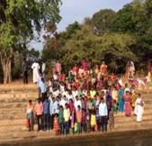
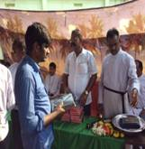
In a canal 94 people (Children, youth, men and women) were baptized. They were given Bibles as gifts.
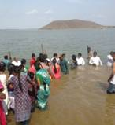
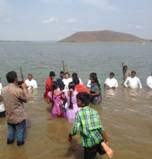
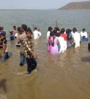
In a lake more than 200 people were baptized in one day.
923 Mass Confirmations
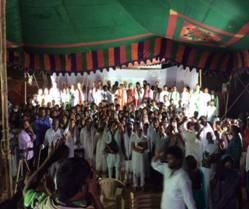
More than 923 were confirmed in one service at Parkal by Bishop Reuben & Bishop Thomas K Oommen.
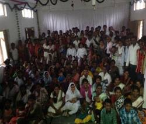
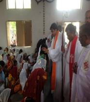
More than 200 people (mostly Banjara Tribes) were confirmed in Church at Suryapet Thanda
The Diocese is on the move with the positive and constructive results. The program of Rachabanda is being organized in all the 56 Pastorates by the Bishop himself with help of Diocesan and Pastorate Officers. The Rachabanda is meant for direct and face to face interaction with the people of the congregation by the Bishop. The program creates a space to Bishop to know the issues and challenges of the people and pastors. This program received an over whelming response from the people and brought about rejuvenation in the life and Ministry of the Diocese and in the various Pastorates in particularly.
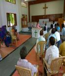
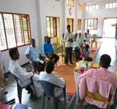
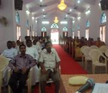
The Evangelists of the Diocese were given training on contextual mission trends and effective mission strategies. The Evangelists were trained at CSI-Synod, Chennai for three days and a special training was conducted at Karimnagar for three days. This training helped them learn the basics of liturgy, how to conduct order of services, preaching and created in them a lot of interest and passion for ministry and evangelism. These training programs helped to imbibe in them the missionary zeal for re-building collapsed congregations established by the sacrificial efforts of Wesleyan Methodist Missionary.
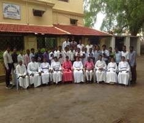
Workshop conducted at Diocesan office for 3 days for Evangelists
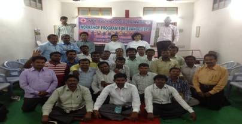
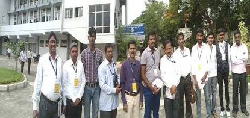
Evangelists who attended Missionary conference at Chennai organized by CSI Synod
V. Ministry for Climate Justice and Ecology: Efforts are being made in the Church & Diocese to create a sensitivity towards Climate Justice and Ecological imbalances. Rev.C.Ramulu Immanuel, Rev.S.John and Mr.B.Johnson were sent to Srilanka as part of CSI Synod Ecological trip, organized by ecological concerns department of synod in order to know the ecological concerns and get enriching experiences in studying ecological issues and listening to the stories of people who got affected by the war and demolition. Our Pastors and lay men and women have attended many Synodical programs on ecology and climate justice organized by CSI Synod. Few of our Pastors wrote articles and Bible Studies on ecology and climate justice which was got published by CSI-Synod Ecological concerns department.
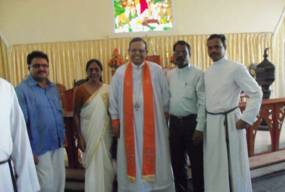
Three delegates representing Karimnagar Diocese in the Ecological meet in Srilanka with CSI-Srilanka Bishop and his wife.
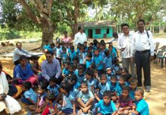
On return from Srilanka exposure Rev.C. Ramulu Emmanuel and B. Johnson organized practical awareness programmes even to small school children.
The Diocese has celebrated the ecological Sunday on 5th June 2015 in all the congregations and conducted various programs on that day and in the following week as part of ecological Sunday celebration. Bishop, Pastors and congregation members planted saplings and compained for eco-friendly living. This effort really evoked a spirit of eco-consciousness among the people and congregations. Bishop especially encouraged and educated school children on the concerns of ecology and planted saplings along with them.
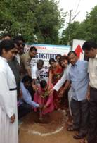
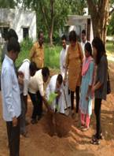
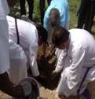
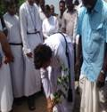
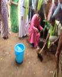
VI. Child Care Ministry:
The Diocese also runs 5 Hostels and 5 day care centres for fostering the orphan, semi-orphan and marginalized Children from remote villages and semi-urban towns. The Diocesan Child Care Ministry has put in tireless efforts in distributing the blankets, note books and guides. Especially during the Christmas Celebrations the Children were given special gifts to celebrate Christmas with their parents and families. SPM girls hostel at Karimnagar and Devanesam Girls hostel at Jagtial were renovated and the basic facilities were provided for the betterment of orphans and the poor.
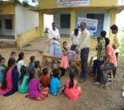
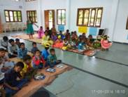
Vaccation Bible Schools at cultural programmes were organized in different villages and towns in the Diocese
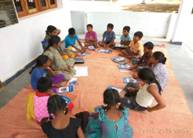
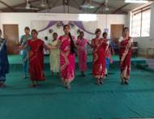
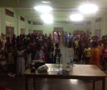
Karimnagar Group level Sunday School Teachers workshop
Diocesan level Sunday School Teachers Workshop
Children get together at Rural and Town levels
Bishop Reuben & Priscilla with school children enlightening them the importance of planting and protecting plants
Bishop and Priscilla sharing Christ’s love by giving books, blankets & stationary to children
Bishop praying for God’s blessings and encouraging mothers and children to grow in prayer life.
Girl’s Hostel at Jagityal - Before Renovation
We were also blessed through your support in repairing some of the old Hostel.
Hostel After Renovation
VII. Women’s Fellowship Activities:Women’s Fellowship is one of the vibrant wing of the Diocese, which regularly organizes a lot of activities for the spiritual nourishment, empowerment and development of women in congregations and in society. The Diocesan Women’s Fellowship organized many activities for the year 2015-16. The Diocesan Annual Women’s celebration held at Karimnagar around 600 women participated in the celebrations. Women were taught and educated to play an important role in Mission, Evangelism and for the life of the Church. A huge number of rural women also participated in the celebration and got inspiration to be active instruments in the ministry of the Church. They also exhibited a lot of arts, talents and skills and shared faith experiences with each other.
The group level women’s Fellowship retreats were conducted in all five group Church Councils for strengthening the local and Pastorate women’s Fellowship ministry and encourage the rural pastorates and members for facing the real life challenges and issues of mission and ministry. Diocesan women’s Fellowship not only focused on mission and evangelism at Diocesan and group level, but also concentrated to do ministry at the pastorate level, especially promoting the concerns of ecology and women’s empowerment, particularly rural women’s empowerment. It brought an alternative consciousness among women by campaigning for girl Child empowerment program and protection. They are also doing Jail Ministry in two fold ways. On the one hand they aim to bring transformation in the lives of the criminals and on the other, to give counseling to the suffering families to cope up with the pain and situations of life. Diocesan women’s Fellowship is also trying hard to promote sensitivity on gender issues to revive cultural practices and retrieve creative arts.
Diocesan Women’s Annual Retreat
Rev. Veena Bunyan empowering women through scriptures as how to encounter the challenges.A view of the women gathered inside the church.
Women sitting outside the church. The women gathered from all the pastorates in the Diocese.
Bishop Reuben at the end of the retreat leading women to commit to the
cause of empowering women at rural and urban level
Women retreats & workshops held in villages with varied themes related to spiritual and social issues:
Women retreat and workshops conducted in towns with themes related to spiritual, physical, psychological(Stress management) and social issues.
Promoting Traditional Folk Culture
Promoting local traditional folk cultural dances at various occasions
Priscilla (Bishop’s wife) started second sales during women retreats to raise money to start a Day Care Center
VIII. Youth Ministry: The Youth work is being actively carried on in the Diocese. The two Diocesan Festivals were organized in which the Youth participated in huge numbers. There was a meaningful celebration of life and faith experiences. The Youth wing of the Diocese also organized different workshops and retreats at group level and pastorate level for making the Youth committed disciples of Jesus Christ and enable them to face the contextual challenges in the era of globalization.Priscilla challenging the Youth at the Karimnagar Group level workshop
Diocesan Youth Retreat where more than 400 youngsters gathered. Bishop Reuben addressing them on “Challenges faced by Youth and how to overcome”
Rural Youth Retreat in Kodakandla village.
Diocesan Youth – Social Concerns
Youth of CSI – Church, Jagityal organized blood donation camp. First one to donate was the local church pastor.
Youth rally “Youth Against Addiction” organized by Karimnagar Diocese
A good number of youth were sent to the Synodical Youth programs organized by the CSI Synod on the concerns of gender justice, ecology, education and capacity building. The enriching experiences gained by the youth in all those exposure were channelized in building the youth fellowships in local congregations. The youth were also part of social activities such as blood donation and expressing the voice on the issues of drugs and addictions, alcoholism and other social issues.
54 Youth from Karimnagar Diocese (rural & urban) took part in the CSI Synod Youth Festival in Thiruvalla, Kerala in October 10-12, 2016. The theme was “Pilgrim Journey Towards Forgiveness and Reconciliation.”
<
IX. Conclusion:The Diocese has tried its best to achieve its priorities and goals for the year 2015-16. We continue to pursue the various ministries and priorities of mission in the Diocese. We are indeed grateful and thankful to MCB for helping with the rolling grants in-order to pursue the mission work and vision of Wesleyan Methodist missionaries. We seek continued support of MCB for the ongoing ministry of the Diocese in the days to come for extending God’s Kingdom.
A special word of thanks to MCB from the Bishop, Diocesan Officers, Clergy and from all the local congregations.
With best wishes,
The Rt.Rev.Dr.Prof.K.Reuben Mark,
Bishop in Karimnagar.
REPORT ON METHODIST ROLLING GRANTS 2015 – 2016 IN KARIMNAGAR DIOCESE.
Latest News
 Latest News 1
Latest News 1
February 16, 2016
Thandri Garu attended the Banquet of CSI UK Telugu members ...
 Latest News 2
Latest News 2
February 15, 2016
Inaugural CSI Holy Communion Service in Telugu at CSI UK Telugu Church
...